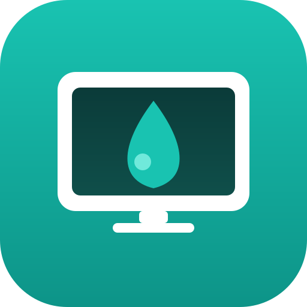

Turn an Android tablet into a real second screen for your Linux PC. Not a copy of your screen or a remote view: droppix adds a monitor to your desktop, so windows drag across to it, and your fingers and stylus work on it. Over USB or Wi-Fi, with sound.
No active monitors — connect a device to extend your desktop
Spacedesk-style extended display for Linux
Version v0.4.0
Enter the pairing code shown on the PC.
A recreation of droppix, with the PC’s control panel on the left. Turn on the Server and tap etienne-pc on the tablet (the code is on the PC), or connect the tablet from the PC under Connections. Then drag a window across to the tablet, draw in Sketch, and open the tablet’s menu in its top corner.
Everything a second screen does, plus the things only a tablet can: touch, a stylus, and turning it on its side.
droppix adds a monitor to your desktop with the evdi driver, the one USB docking stations use. Windows drag across to it, apps go full screen on it, and you arrange it in your desktop's own display settings, like any other monitor.
Tap, drag and scroll with your fingers, with multi-touch. A two-finger tap is a right-click, and the menu opens where you tapped. The menu in the corner brings up the tablet's keyboard, and a keyboard paired with the tablet types too.
A pen with pressure and an eraser end turns the tablet into a drawing tablet with a screen, for Krita, GIMP, Xournal++ or any app that reads a pen.
Turn the tablet and the screen turns with it: droppix sends a portrait screen in portrait and a landscape one in landscape. Rotation can be locked from the tablet.
droppix adds a sound output to the PC. Choose it and the PC's sound plays from the tablet's speakers, with the delay kept short so it stays in step with the picture.
Over a USB cable (with adb, USB tethering, or Android's accessory mode, which works with USB debugging off), or over Wi-Fi, where the PC shows up on the tablet by itself. A tablet plugged into the PC can be connected from the PC, without touching the tablet.
A new tablet pairs with the 6-digit code the PC shows, or by scanning its QR code, and the connection is encrypted. Tablets you've paired reconnect without asking again.
Connect more than one tablet and each one becomes its own screen, at its own resolution. Tablets you've used before can connect by themselves when they're around.
No Android? Turn on the web client and open the address the PC shows in a browser, on any tablet, phone or laptop. It pairs with the same code, and Chrome can install it as an app. The Linux client turns a second Linux computer into a screen.
The picture is sent as H.264 video, encoded on the graphics card with NVIDIA NVENC or VAAPI (Intel and AMD), or in software when there's no graphics card to use. The tablet decodes it in hardware.
KDE Plasma 6 and 5.27, GNOME, Sway, Hyprland 0.42 and newer, COSMIC, and X11 desktops like Cinnamon, Xfce and MATE. droppix talks to each one in its own way, so the new screen lands beside your main one and touch goes to the right screen.
The Android app runs on Android 5.0 and newer, and was built on a Nexus 10 from 2012. The tablet sets its own resolution, frame rate, quality, brightness and contrast, and can show the frame rate and delay on screen.
droppix on the PC, and the app on the tablet. A browser needs nothing installed.
64-bit Intel or AMD, on a distribution from 2022 or newer (glibc 2.35).
One file that runs on Ubuntu 22.04 and newer, Debian 12, Fedora, Arch, openSUSE and the rest. It needs the evdi module from your distribution (see Setup).
The same app as a Flatpak bundle. The parts that need the real system (the screen driver, touch and sound) still run on the PC itself, so the same requirements apply.
The tablet, phone or computer that becomes the second screen.
The app for tablets and phones, with hardware video decoding, touch, stylus, keyboard, rotation and sound.
Turns a second Linux computer, like an old laptop, into a screen for the first. It only shows the screen, so it needs nothing special on that computer.
Nothing to install. On the PC, turn on Settings → Offer web / PWA client, then open the address the Status page shows in a browser on the other device and enter the pairing code.
All builds are v0.4.0. Source code available on GitHub.
A few things on the PC once, then connecting takes a tap.
droppix makes its screen with the evdi kernel module, which has to come from your distribution: it's evdi-dkms on Ubuntu and Debian (sudo apt install evdi-dkms) and in the AUR on Arch. droppix loads it when it's needed. For USB with adb, install adb too.
Open droppix and switch on Server on the Status page. It asks for your password, because making a screen and touch devices needs root. The switch stays on the next time you open droppix.
Over Wi-Fi: open droppix on the tablet, tap your PC under Discovered PCs, and enter the code the PC shows, or scan its QR code. Over USB: plug the tablet in and pick it under Connections on the PC, or tap the USB button on the tablet.
The tablet becomes a screen beside your main one. Move it in your desktop's display settings like any monitor, and choose the sound output called droppix-audio to hear the PC through the tablet.
WLR_EVDI_RENDER_DEVICE=/dev/dri/renderD128 (your graphics card's render node, from ls /dev/dri), so it can draw the new screen. Plasma, GNOME, Hyprland, COSMIC and X11 need nothing extra.A C++ engine on the PC, and three ways to show what it sends.